13.4 Median of Grouped Data
As you have studied in Class IX, the median is a measure of central tendency which gives the value of the middle-most observation in the data. Recall that for finding the median of ungrouped data, we first arrange the data values of the observations in ascending order. Then, if n is odd, the median is the \(\left(\dfrac{n+1}{2}\right)\)th observation. And, if n is even, then the median will be the average of the \(\dfrac{n}{2}\)th and the \(\left(\dfrac{n}{2}+1\right)\)th observations.
Suppose, we have to find the median of the following data, which gives the marks, out of 50, obtained by 100 students in a test :
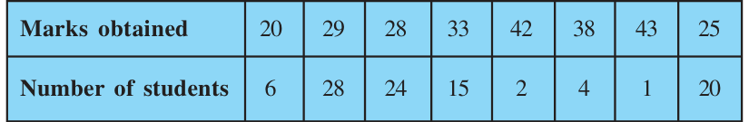
First, we arrange the marks in ascending order and prepare a frequency table as follows :
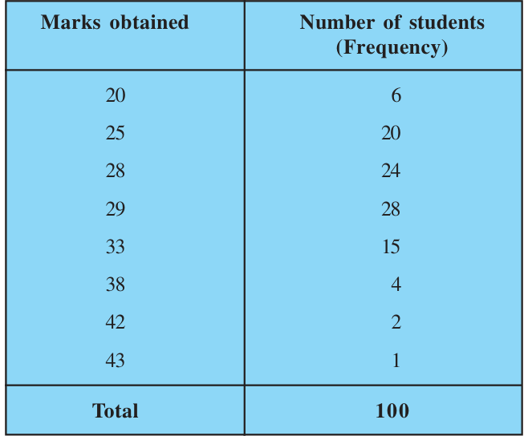
Here \(n = 100\), which is even. The median will be the average of the \(\dfrac{n}{2}\)th and the \(\left(\dfrac{n}{2}+1\right)\)th observations, i.e., the 50th and 51st observations. To find these observations, we proceed as follows:
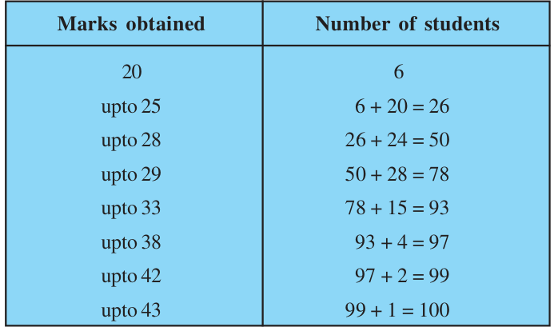
Now we add another column depicting this information to the frequency table above and name it as cumulative frequency column.
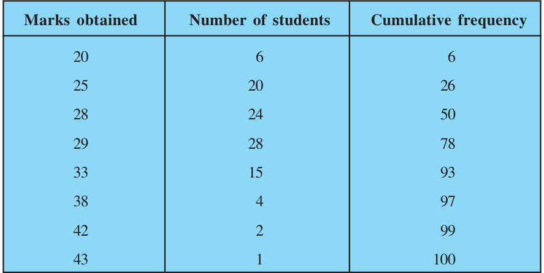
From the table above, we see that:
50th observaton is 28 (Why?)
51st observation is 29
\(\text{So,}\quad \text{Median} = \dfrac{28 + 29}{2} = 28.5\)
Remark :
The part of Table 13.11 consisting Column 1 and Column 3 is known as Cumulative Frequency Table. The median marks 28.5 conveys the information that about 50% students obtained marks less than 28.5 and another 50% students obtained marks more than 28.5.
Now, let us see how to obtain the median of grouped data, through the following situation.
Consider a grouped frequency distribution of marks obtained, out of 100, by 53 students, in a certain examination, as follows:
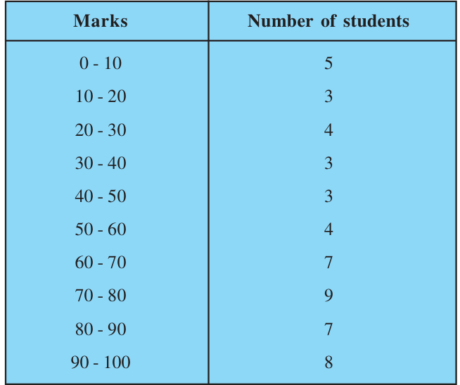
From the table above, try to answer the following questions:
How many students have scored marks less than 10? The answer is clearly 5.
How many students have scored less than 20 marks? Observe that the number of students who have scored less than 20 include the number of students who have scored marks from 0 - 10 as well as the number of students who have scored marks from 10 - 20. So, the total number of students with marks less than 20 is 5 + 3, i.e., 8. We say that the cumulative frequency of the class 10 - 20 is 8.
Similarly, we can compute the cumulative frequencies of the other classes, i.e., the number of students with marks less than 30, less than 40, . . ., less than 100. We give them in Table 13.13 given below:
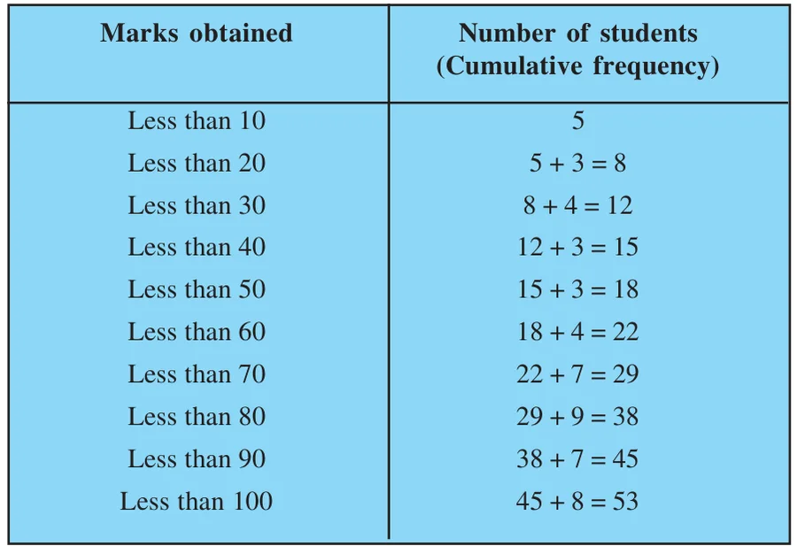
The distribution given above is called the cumulative frequency distribution of the less than type. Here 10, 20, 30, . . . 100, are the upper limits of the respective class intervals.
We can similarly make the table for the number of students with scores, more than or equal to 0, more than or equal to 10, more than or equal to 20, and so on. From Table 13.12, we observe that all 53 students have scored marks more than or equal to 0. Since there are 5 students scoring marks in the interval 0 - 10, this means that there are 53 – 5 = 48 students getting more than or equal to 10 marks. Continuing in the same manner, we get the number of students scoring 20 or above as 48 – 3 = 45, 30 or above as 45 – 4 = 41, and so on, as shown in Table 13.14.
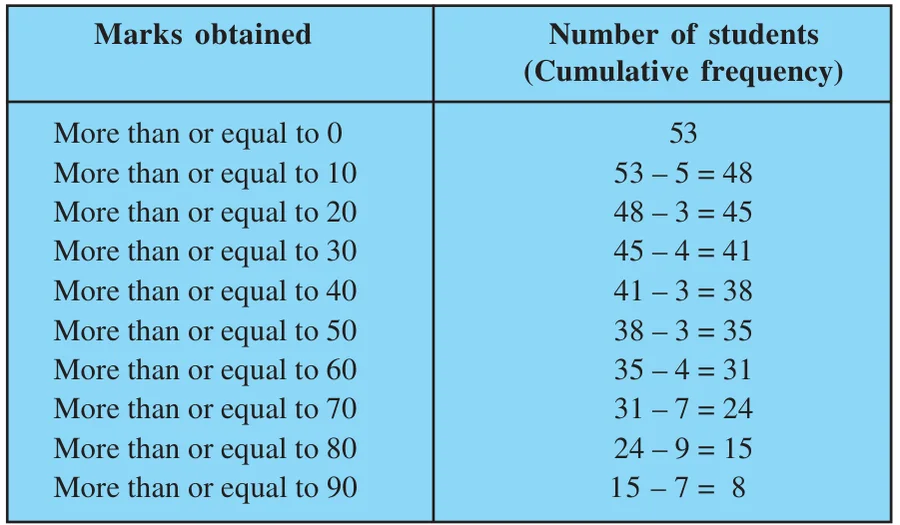
The table above is called a cumulative frequency distribution of the more than type. Here 0, 10, 20, . . ., 90 give the lower limits of the respective class intervals.
Now, to find the median of grouped data, we can make use of any of these cumulative frequency distributions.
Let us combine Tables 13.12 and 13.13 to get Table 13.15 given below:
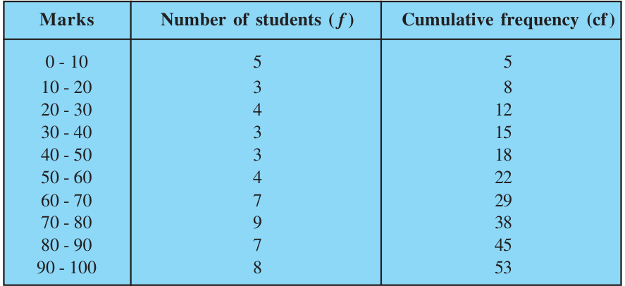
Now in a grouped data, we may not be able to find the middle observation by looking at the cumulative frequencies as the middle observation will be some value in a class interval. It is, therefore, necessary to find the value inside a class that divides the whole distribution into two halves. But which class should this be?
To find this class, we find the cumulative frequencies of all the classes and \(\dfrac{n}{2}\). We now locate the class whose cumulative frequency is greater than (and nearest to) \(\dfrac{n}{2}\). This is called the median class. In the distribution above, \(n = 53\). So, \(\dfrac{n}{2} = 26.5\). Now 60 – 70 is the class whose cumulative frequency 29 is greater than (and nearest to) \(\dfrac{n}{2}\), i.e., 26.5.
Therefore, 60 – 70 is the median class.
After finding the median class, we use the following formula for calculating the median.
\(\text{Median} = l + \left(\dfrac{\dfrac{n}{2} - \text{cf}}{f}\right) \times h,\)
where \(l =\) lower limit of median class,
\(n =\) number of observations,
\(\text{cf} =\) cumulative frequency of class preceding the median class,
\(f =\) frequency of median class,
\(h =\) class size (assuming class size to be equal).
Substituting the values \(\dfrac{n}{2} = 26.5\), \(l = 60\), \(\text{cf} = 22\), \(f = 7\), \(h = 10\) in the formula above, we get
\(\text{Median} = 60 + \left(\dfrac{26.5 - 22}{7}\right) \times 10\)
\(= 60 + \dfrac{45}{7}\)
\(= 66.4\)
So, about half the students have scored marks less than 66.4, and the other half have scored marks more than 66.4.
Example 7 :
A survey regarding the heights (in cm) of 51 girls of Class X of a school was conducted and the following data was obtained:
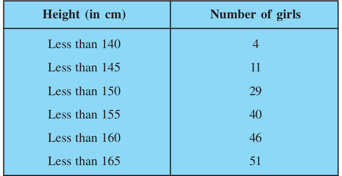
Find the median height.
Solution :
To calculate the median height, we need to find the class intervals and their corresponding frequencies.
The given distribution being of the less than type, 140, 145, 150, . . ., 165 give the upper limits of the corresponding class intervals. So, the classes should be below 140, 140 - 145, 145 - 150, . . ., 160 - 165. Observe that from the given distribution, we find that there are 4 girls with height less than 140, i.e., the frequency of class interval below 140 is 4. Now, there are 11 girls with heights less than 145 and 4 girls with height less than 140. Therefore, the number of girls with height in the interval 140 - 145 is 11 – 4 = 7. Similarly, the frequency of 145 - 150 is 29 – 11 = 18, for 150 - 155, it is 40 – 29 = 11, and so on. So, our frequency distribution table with the given cumulative frequencies becomes:
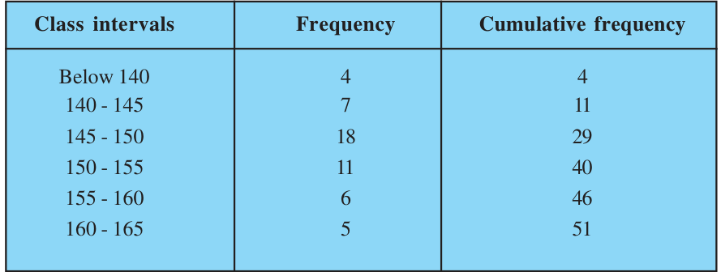
Now \(n = 51\). So, \(\dfrac{n}{2} = \dfrac{51}{2} = 25.5\). This observation lies in the class 145 - 150. Then,
l (the lower limit) = 145,
cf (the cumulative frequency of the class preceding 145 - 150) = 11,
f (the frequency of the median class 145 - 150) = 18,
h (the class size) = 5.
Using the formula, \(\text{Median} = l + \left(\dfrac{\dfrac{n}{2} - \text{cf}}{f}\right) \times h\), we have
\(\text{Median} = 145 + \left(\dfrac{25.5 - 11}{18}\right) \times 5\)
\(= 145 + \dfrac{72.5}{18} = 149.03.\)
So, the median height of the girls is 149.03 cm.
This means that the height of about 50% of the girls is less than this height, and 50% are taller than this height.
Example 8 :
The median of the following data is 525. Find the values of x and y, if the total frequency is 100.
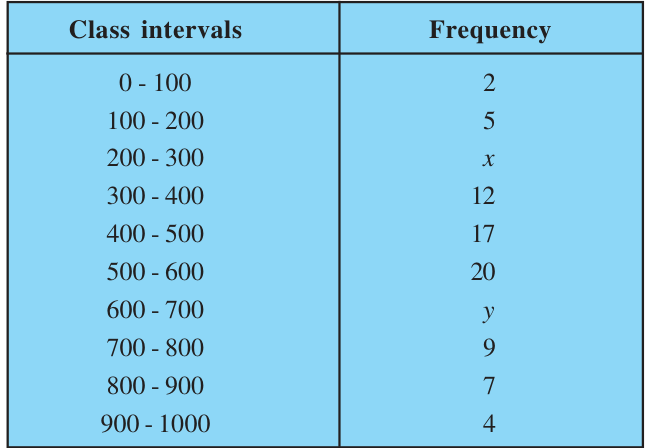
Solution :
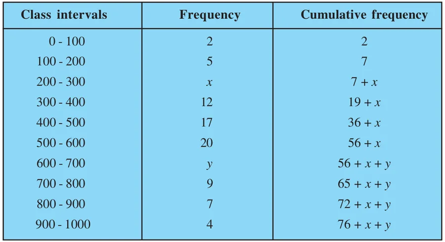
It is given that \(n = 100\)
\(\text{So,}\quad 76 + x + y = 100, \quad \text{i.e.,}\quad x + y = 24 \qquad (1)\)
The median is 525, which lies in the class 500 – 600
\(\text{So,}\quad l = 500, \quad f = 20, \quad \text{cf} = 36 + x, \quad h = 100\)
Using the formula : \(\text{Median} = l + \left(\dfrac{\dfrac{n}{2} - \text{cf}}{f}\right)h\), we get
\(525 = 500 + \left(\dfrac{50 - 36 - x}{20}\right) \times 100\)
\(\text{i.e.,}\quad 525 - 500 = (14 - x) \times 5\)
\(\text{i.e.,}\quad 25 = 70 - 5x\)
\(\text{i.e.,}\quad 5x = 70 - 25 = 45\)
\(\text{So,}\quad x = 9\)
Therefore, from (1), we get \(9 + y = 24\)
\(\text{i.e.,}\quad y = 15\)
Now, that you have studied about all the three measures of central tendency, let us discuss which measure would be best suited for a particular requirement.
The mean is the most frequently used measure of central tendency because it takes into account all the observations, and lies between the extremes, i.e., the largest and the smallest observations of the entire data. It also enables us to compare two or more distributions. For example, by comparing the average (mean) results of students of different schools of a particular examination, we can conclude which school has a better performance.
However, extreme values in the data affect the mean. For example, the mean of classes having frequencies more or less the same is a good representative of the data. But, if one class has frequency, say 2, and the five others have frequency 20, 25, 20, 21, 18, then the mean will certainly not reflect the way the data behaves. So, in such cases, the mean is not a good representative of the data.
In problems where individual observations are not important, and we wish to find out a ‘typical’ observation, the median is more appropriate, e.g., finding the typical productivity rate of workers, average wage in a country, etc. These are situations where extreme values may be there. So, rather than the mean, we take the median as a better measure of central tendency.
In situations which require establishing the most frequent value or most popular item, the mode is the best choice, e.g., to find the most popular T.V. programme being watched, the consumer item in greatest demand, the colour of the vehicle used by most of the people, etc.
Remarks :
- 1.There is a empirical relationship between the three measures of central tendency :
\(\textbf{3 Median = Mode + 2 Mean}\)
- 2.The median of grouped data with unequal class sizes can also be calculated. However, we shall not discuss it here.